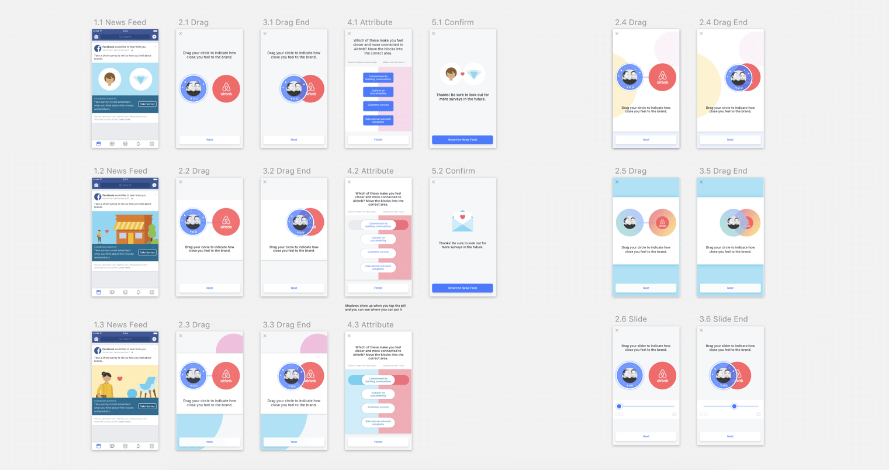
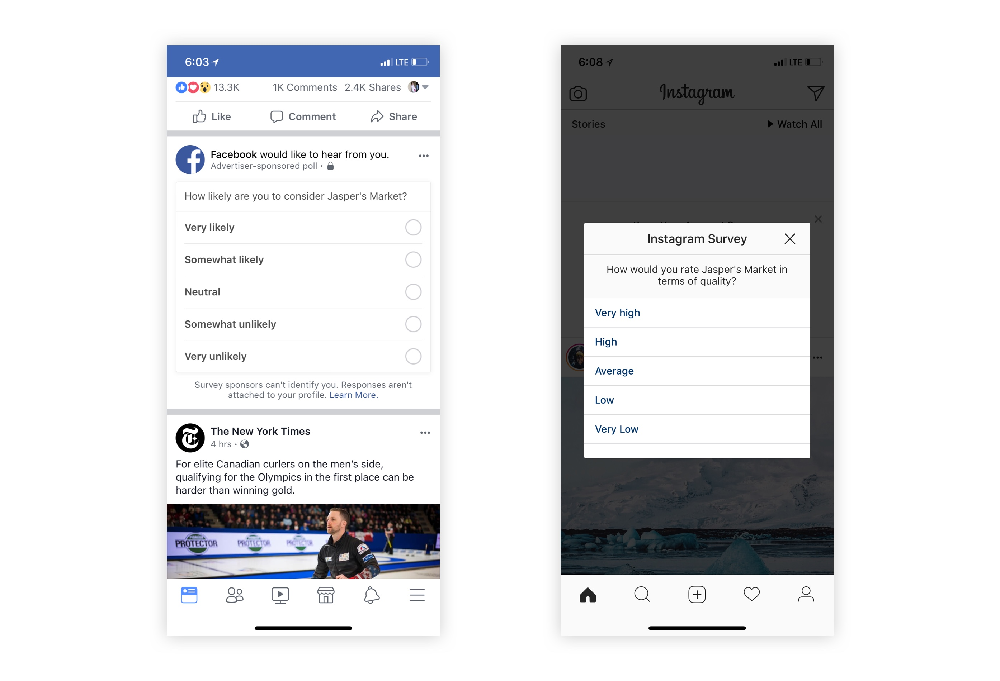
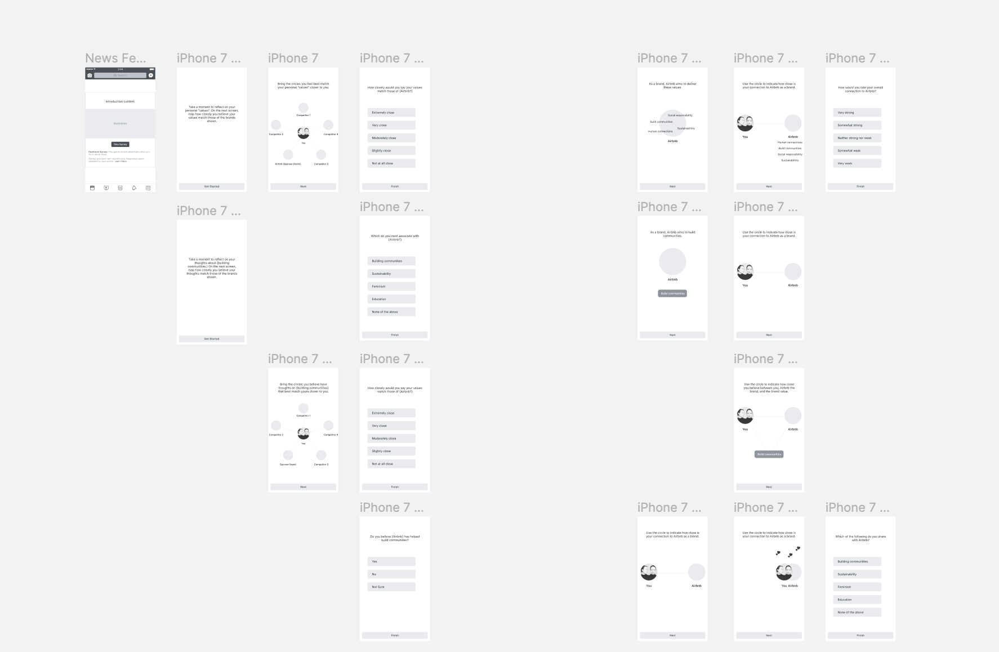
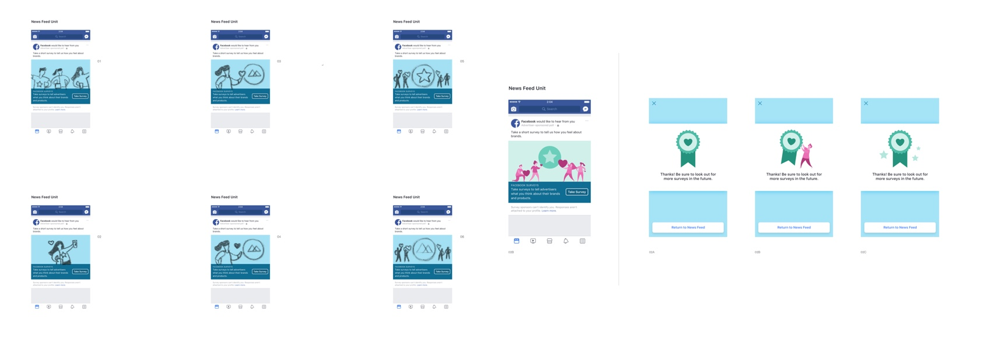

Brand Equity Polling
Product Design · Meta · 2017
Product Design · Meta · 2017

I was working on the Lift team within Measurement under the Ads org at Facebook. I was the only designer on this project, collaborating with PM, UX Researcher, Content Strategist, Data Scientist, Product Marketing Manager, an Illustration Contractor, and Mobile Engineers.
Advertisers use Brand Lift to measure the effectiveness of their brand advertising on Facebook. We randomize a target audience into test and control groups, serve ads only to the test group, then poll both groups in News Feed with questions about the brand. By comparing favorable response rates between the two groups, we can measure whether the ads produced a lift.
Standard brand polling methods don't measure mid-funnel or bottom-funnel brand metrics — like Message Association or Purchase Intent — in a sensitive way. The plain polling format in News Feed wasn't effective at capturing emotional response or subtle attitude changes.
Project goals:

Standard brand polling unitsSuggested by our UX Researcher (who holds a PhD in social psychology), we adopted a method from social science research to measure felt connection. In this method, participants choose the visual representation of two overlapping circles that best describes their connection to a concept — a technique known as Inclusion of Other in the Self (IOS). See: Ingroup Identification as the Inclusion of Ingroup in the Self — Tropp & Wright, 2001.

Initial explorationThrough structured reviews with PMM, Data Science, and our UX Researcher, we converged on a set of key decisions:
With the concept defined, I moved into visual and interaction design. I used Framer to prototype the full interaction flow. A key decision was drag versus slider interaction.
We chose the slider because it more closely approximates the established metric, and communicates affordance and range of options more clearly than drag.
I worked with an external illustrator to produce the custom assets before campaign launch. I communicated the design brief and asset requirements, reviewed proposals, and iterated over 6 rounds of feedback before landing on the final version.

Illustration iterationsI collaborated with PMM and engineers to finalize the campaign schedule and ship timeline, and ensured design QA happened before engineering testing. We successfully launched this poll with Uber's brand campaign in 2017 Q4.
Following a similar process, we designed and launched a second format — Price Premium — with Mondelez (parent company of Oreos). This format measures whether brand advertising enables advertisers to charge a premium price compared to competitors.
Both formats agreed with comparable standard formats directionally and appeared to produce greater signal. The Connection format measured a statistically significant 22-point lift in connection score, while the comparable standard format measured only a 2.8-point lift. The Price Premium format measured a −5.9-point stat-sig lift versus a −1.6-point non-stat-sig result for the standard format.
CTR from the feed was significantly lower than standard formats — this needs to be addressed before drawing more definitive conclusions about the potential of the new formats.
The lower-than-expected CTR from News Feed is the most critical open question. The next step would be investigating whether the interaction complexity was the cause — and whether a simplified entry point (or a different feed placement) could improve click-through without sacrificing the signal quality. Given the strong early results from both formats, there's a real opportunity to scale this into a standardized offering for brand advertisers.